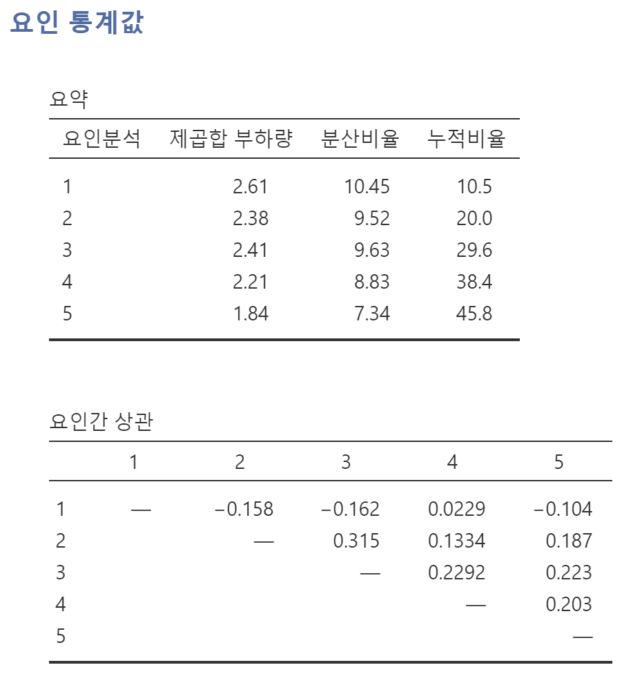
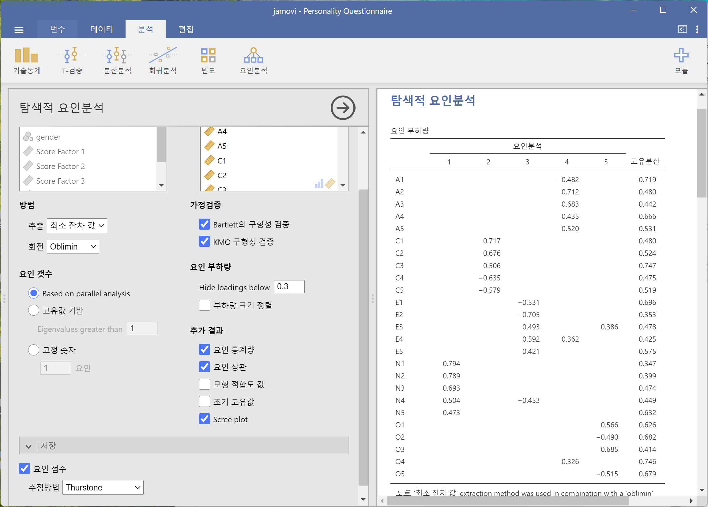
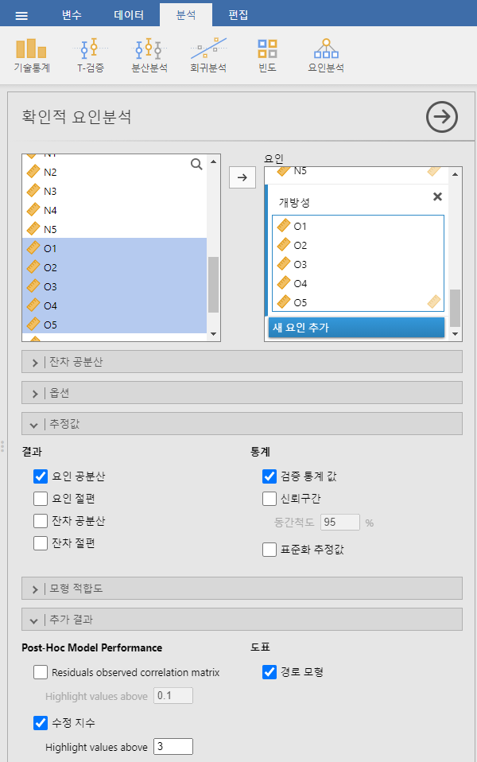
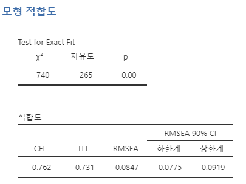

15 요인분석
이전 장에서는 두 개 이상의 집단 사이의 차이를 비교하는 통계적 검정을 다루었습니다. 그러나 연구를 수행할 때, 여러 변수가 공변(co-vary)하는 방식, 즉 변수들이 서로 어떻게 관련되어 있는지와 그 관련성의 패턴이 의미 있는지 살펴보고 싶을 때가 있습니다. 예를 들어, 수집한 데이터에서 관측된 변수들이 어떤 기저의 (관측되지 않은) 잠재 요인을 나타내는지 관심이 있을 수 있습니다. 통계학에서 잠재 요인이란 직접 관측되지 않으나 관측된 다른 변수들로 추론되는 숨겨진 변수입니다. 요인분석의 필수적인 개념에 대한 보다 기술적이고 유용한 기하학적 설명은 Child (1990) 을 참고하십시오. 또한, Kline (1994) 는 요인분석의 기본 이론에 대한 유용한 소개를 제공합니다.
이 장에서는 다양한 요인분석 기법 및 관련 기술을 다루겠습니다. 먼저, 탐색적 요인분석 (EFA)을 소개합니다. EFA는 데이터에서 기저의 잠재 요인(latent factors)을 식별하는 통계 기법입니다. 그다음으로, 주성분 분석 (PCA)을 다루겠습니다. PCA는 데이터 차원 축소 기법으로, 엄밀히 말하면 기저의 잠재 요인을 식별하는 것은 아닙니다. 대신, PCA는 단순히 관측된 변수들의 선형 결합을 생성합니다. 이후, 확인적 요인분석 (CFA) 절에서는 EFA와 달리 CFA에서는 먼저 변수들의 관계에 대한 하나의 아이디어, 즉 모형을 설정하고, 이를 실제 관측된 데이터와 비교하여 모형의 적합도를 평가하는 방법임을 설명합니다. 보다 발전된 CFA 기법으로 [다특질 다방법 확인적 요인분석] (Multi-Trait Multi-Method CFA) 접근법이 있습니다. 이 방법에서는 잠재 요인뿐만 아니라 방법의 분산도 모형에 포함됩니다. 이는 서로 다른 방법론적 접근이 측정에 사용되는 경우, 방법 분산이 중요한 고려 요소가 되기 때문입니다. 마지막으로, 내적 일관성 신뢰도 분석을 다루겠습니다. 이는 특정 척도가 심리학적 구성 개념을 얼마나 일관되게 측정하는지를 평가하는 기법입니다.
15.1 탐색적 요인분석
탐색적 요인분석 (Exploratory Factor Analysis; EFA)은 관찰된 데이터에서 숨겨진 잠재 요인을 추론하는 통계적 기법입니다. 이 기법은 측정된 변수 집합, 예를 들어 \(V_1, V_2, V_3, V_4\), \(V_5\)가 기저의 잠재 요인의 측정값으로 얼마나 잘 표현될 수 있는지를 계산합니다. 이러한 잠재 요인은 하나의 관찰된 변수만으로 측정될 수 없으며, 대신 관찰된 변수 집합에서 나타나는 관계를 통해 드러납니다.
Figure 15.1 에서 관찰된 변수 \(V\)들은 기저의 잠재요인(\(F\))에 의해 어느 정도 ’유발’되며, 이는 계수 \(b_1\)에서 \(b_5\)(요인 적재량(부하량)이라고도 함)으로 나타납니다. 관찰된 변수에는 또한 \(e_1\)에서 \(e_5\)까지의 오차 항이 있습니다. 각 오차 항은 관찰된 변수 \(V_i\)에서 기저의 잠재 요인으로 설명되지 않는 분산을 나타냅니다.
심리학에서 잠재 요인은 직접 관찰하거나 측정하기 어려운 심리적 현상이나 구성 개념을 나타냅니다. 예를 들어, 성격, 지능, 사고 방식 등이 이에 해당합니다. Figure 15.1 은 사람들이 특정한 행동이나 태도에 대한 다섯 가지 질문에 응답하도록 했고, 이를 통해 “외향성”이라는 성격 구성 개념을 파악하는 예일 수도 있습니다. 또 다른 질문 집합을 통해 개인의 내향성이나 성실성을 측정할 수도 있습니다.
또 다른 예로, 통계 불안을 직접 측정할 수는 없지만, 설문지의 일련의 질문을 통해 통계 불안이 높은지 낮은지를 평가할 수 있습니다. 예를 들어, “\(Q1\): 통계 과목의 과제를 수행하기”, “\(Q2\): 학술 논문에서 기술된 통계를 이해하려고 시도하기”, “\(Q3\): 강사에게 강의 내용에 대한 도움을 요청하기” 등을 수행할 때 불안의 정도를 낮은 불안에서 높은 불안까지 평가하게 질문할 수 있습니다. 통계 불안이 높은 사람들은 이러한 질문들에 대해 일관되게 높은 점수를 줄 가능성이 높으며, 반대로 통계 불안이 낮은 사람들은 일관되게 낮은 점수를 줄 가능성이 큽니다.
탐색적 요인분석(EFA)에서는 본질적으로 관찰된 변수들 사이의 상관관계를 분석하여 흥미롭고 중요한 기저의 잠재 요인을 찾아냅니다. 통계 소프트웨어를 이용하여 잠재 요인을 추정하고, 어떤 변수가 특정 요인에 대해 높은 적재량1 (예: 적재량 > 0.5)을 가지는지 식별할 수 있고, 이는 해당 변수가 잠재 요인의 유용한 측정 지표임을 의미합니다. 이 과정에서 “회전(rotation)”이라는 단계가 포함되는데, 이는 다소 이해하기 어려운 개념이지만, 다행히도 깊이 이해할 필요는 없습니다. 단지 회전이 서로 다른 요인에 대한 적재량 패턴을 보다 명확하게 만들어 주는 유용한 과정임을 알면 충분합니다. 즉, 회전은 각 요인과 관련된 변수를 더욱 명확하게 식별하는 데 도움을 줍니다. 또한, 주어진 데이터에서 몇 개의 요인이 적절한지를 결정해야 하는데, 이를 돕는 개념이 바로 “고유값(Eigen values)”입니다. 이에 대해서는 주요 가정을 다룬 후 다시 설명하겠습니다.
15.1.1 가정 검토하기
분석을 수행하기 전에 확인해야 할 몇 가지 가정이 있습니다. 첫 번째 가정은 구형성(sphericity)으로, 이는 데이터 내 변수들이 서로 상관관계를 가져 요인분석을 통해 요약될 가능성이 있는지를 평가하는 것입니다. Bartlett의 구형성 검정은 관찰된 상관 행렬이 영 (또는 귀무) 상관 행렬과 유의미하게 차이가 있는지를 확인합니다. 따라서 Bartlett 검정이 유의미한 경우(\(p < .05\)), 이는 관찰된 상관 행렬이 영 상관 행렬과 유의미하게 다르며, EFA에 적합함을 의미합니다.
두 번째 가정은 표본 적절성(sampling adequacy)이며, 이는 Kaiser-Meyer-Olkin (KMO) 표본 적절성 측도(MSA)를 사용하여 확인합니다. KMO 지수는 관찰된 변수의 분산 중 공통 분산이 차지하는 비율을 측정합니다. 부분 상관을 이용하여 단 두 개의 항목에만 부하되는 요인이 있는지 확인하며, 일반적으로 EFA에서 단 두 개의 항목에만 부하되는 요인이 다수 존재하는 것은 바람직하지 않습니다. KMO는 표본 적절성과 관련이 있으며, 부분 상관이 높은 경우에는 표본이 적절하지 않은 것으로 간주됩니다. KMO 지수가 높을수록 (\(\approx 1\)) EFA가 효율적이고, 낮을수록 (\(\approx 0\)) EFA가 적절하지 않습니다. KMO 값이 \(0.5\)보다 작으면 EFA에 적합하지 않으며, 최소한 \(0.6\) 이상의 KMO 값을 가져야 EFA를 수행할 수 있습니다. KMO 값이 \(0.5\)~\(0.7\)이면 적절, \(0.7\)~\(0.9\)이면 우수, \(0.9\)~\(1.0\)이면 매우 우수한 것으로 간주됩니다.
15.1.2 EFA의 활용
EFA가 좋은 해결책(즉, 요인 모형)을 제공했다면, 이제 새롭게 발견한 요인을 어떻게 활용할지를 결정해야 합니다. 연구자들은 심리측정 척도를 개발할 때 EFA를 자주 사용합니다. 연구자는 하나 이상의 심리적 구성 개념과 관련된 설문 문항 풀(pool)을 개발한 후, EFA를 사용하여 어떤 문항들이 함께 묶여 잠재 요인을 형성하는지를 확인합니다. 그런 다음 특정 요인을 명확하게 측정하지 못하는 문항을 제거할지를 평가합니다.2
이 접근법과 관련하여, EFA의 또 다른 결과는 특정 요인에 부하된 변수를 결합하여 요인 점수(때로는 척도 점수라고도 함)를 생성하는 것입니다. 변수를 척도 점수로 결합하는 방법에는 두 가지 옵션이 있습니다:
- 요인에 기여하는 각 항목의 요인 적재량에 따라 가중치를 부여하여 새로운 변수를 생성하는 방법
- 요인에 기여하는 각 항목을 동일한 가중치로 결합하여 새로운 변수를 생성하는 방법
첫 번째 방법에서는 각 항목이 요인과 얼마나 강하게 관련되어 있는지에 따라 결합된 척도 점수에 대한 기여도가 달라집니다. 두 번째 방법에서는 요인에 기여하는 모든 항목의 평균을 구하여 척도 점수를 생성합니다. 어느 방법을 선택할지는 연구자의 선호에 따라 달라질 수 있지만, 첫 번째 방법의 단점은 표본마다 적재량이 크게 변할 수 있다는 점입니다. 특히 행동과 보건 과학에서는 다양한 연구 및 다양한 표본에서 사용될 수 있는 복합 설문 척도를 개발하고 활용하는 것이 일반적이므로, 특정 표본의 적재량에 따라 가중치를 부여하는 것보다 모든 항목을 동일하게 취급하는 복합 측정 방법이 보다 합리적일 수 있습니다. 또한, 여러 항목의 평균을 활용하는 방법이 특정 표본에 최적화된 가중 조합을 사용하는 것보다 이해하기 쉽고 직관적입니다.
그러나 이보다 먼저, 우리가 집중해야 할 것은 jamovi에서 EFA를 수행하는 방법입니다.
15.1.3 jamovi에서 EFA 수행하기
EFA를 위한 데이터를 준비해 봅시다. 국제 성격 항목 풀(http://ipip.ori.org)에서 가져온 25개의 성격 자가 보고 항목(표 Table 15.1 참조)은 Synthetic Aperture Personality Assessment (SAPA)의 웹 기반 성격 평가 프로젝트(http://sapa-project.org)의 일부로 포함되어 있습니다. 이 25개 항목은 다음의 다섯 가지 잠정적 요인으로 구성되어 있습니다.
- 친화성 (Agreeableness)
- 성실성 (Conscientiousness)
- 외향성 (Extraversion)
- 신경증 (Neuroticism)
- 개방성 (Openness)
이 항목 데이터는 6점 척도를 사용하여 수집되었습니다:
- 매우 그렇지 않다.
- 다소 그렇지 않다.
- 약간 그렇지 않다.
- 약간 그렇다.
- 다소 그렇다.
- 매우 그렇다.
\(N=250\)명의 응답을 포함하는 샘플 데이터가 bfi_sample.csv에 있습니다. 연구자로서 우리는 이 데이터를 탐색하여 25개의 관찰된 변수가 어떠한 잠재 요인을 적절하게 측정하고 있는지를 확인하는 데 관심이 있습니다. 데이터를 열어 25개 변수가 연속형 변수로 코딩되어 있는지 확인하십시오(기술적으로는 서열 변수이지만, jamovi에서 EFA를 수행하는 경우 가중치가 적용된 요인 점수를 계산하지 않는 한 크게 문제가 되지 않습니다).
| 변수 이름 | 질문 / 항목 (짧은 문구가 당신의 일반적인 행동이나 태도를 얼마나 정확하게 설명하는지 표시하세요) | 코딩 (R: 역코딩) |
|---|---|---|
| A1 | 다른 사람의 감정에 무관심하다 | R |
| A2 | 다른 사람의 안부를 묻는다 | |
| A3 | 다른 사람을 위로하는 방법을 안다 | |
| A4 | 아이들을 좋아한다 | |
| A5 | 사람들을 편안하게 만든다 | |
| C1 | 일을 철저하게 한다 | |
| C2 | 완벽할 때까지 계속한다 | |
| C3 | 계획에 따라 일을 한다 | |
| C4 | 일을 대충 한다 | R |
| C5 | 시간을 낭비한다 | R |
| E1 | 말을 많이 하지 않는다 | R |
| E2 | 다른 사람에게 다가가는 것이 어렵다 | R |
| E3 | 사람들을 사로잡는 방법을 안다 | |
| E4 | 쉽게 친구를 만든다 | |
| E5 | 주도권을 잡는다 | |
| N1 | 쉽게 화를 낸다 | |
| N2 | 쉽게 짜증을 낸다 | |
| N3 | 기분 변화가 자주 있다 | |
| N4 | 우울한 기분을 자주 느낀다 | |
| N5 | 쉽게 공황 상태에 빠진다 | |
| O1 | 아이디어가 풍부하다 | |
| O2 | 어려운 읽을거리를 피한다 | R |
| O3 | 대화를 더 높은 수준으로 이끈다 | |
| O4 | 생각하는 시간을 많이 갖는다 | |
| O5 | 어떤 주제를 깊이 파고들지 않는다 | R |
jamovi에서 EFA를 수행하는 방법은 다음과 같습니다.
jamovi에서 ‘분석’-‘요인분석’-’탐색적 요인분석’을 선택하여 EFA 분석 창을 엽니다(Figure 15.2 참조).
25개의 성격 질문을 선택하고 ‘변수’ 상자로 이동합니다.
‘가정검증’을 포함한 적절한 옵션을 선택하고, 회전 ’방법’, 추출할 ‘요인 갯수’, ‘추가 결과’ 옵션을 확인합니다. Figure 15.2 에서는 예시적인 EFA에 대한 추천 옵션을 보여주고 있으며, 회전 ‘방법’ 및 추출된 ’요인 수’는 분석 중에 연구자가 최상의 결과를 찾기 위해 조정하는 것이 일반적입니다.
먼저, 가정을 확인합니다(Figure 15.3 참조). (1) Bartlett의 구형성 검정이 유의미하므로 이 가정이 충족되었으며, (2) KMO 표본 적절성 측도(MSA)가 전체적으로 \(0.81\)로 나타나 표본 적절성이 우수함을 시사합니다. 따라서 문제없이 진행할 수 있습니다!
다음으로 확인해야 할 것은 몇 개의 요인을 사용할 것인지(또는 데이터에서 “추출할 것인지”)입니다. 이를 결정하는 세 가지 접근법이 있습니다.
- 하나의 기준은 고유값(Eigen value)이 1보다 큰 모든 요인을 선택하는 것입니다3. 이 기준을 따르면, 우리 데이터에서는 네 개의 요인을 얻게 됩니다(직접 실행해 보고 확인해 보세요).
스크리 플롯을 검사하는 방법도 있습니다(Figure 15.4 참조). 여기서 “변곡점”을 식별하는 것이 핵심입니다. 변곡점은 스크리 곡선의 기울기가 명확히 완만해지는 지점으로, 즉, “팔꿈치” 아래에 위치합니다. 우리 데이터에서는 다섯 개의 요인을 선택할 수 있습니다. 스크리 플롯을 해석하는 것은 어느 정도 직관이 필요한 작업입니다. Figure 15.4 에서는 요인 5에서 6으로 넘어갈 때 눈에 띄는 단계적 변화가 있지만, 다른 스크리 플롯에서는 이처럼 명확하지 않을 수도 있습니다.
병렬 분석(parallel analysis) 기법을 사용하면, 얻어진 고유값을 무작위 데이터에서 얻어질 것으로 예상되는 고유값과 비교할 수 있습니다. 추출할 요인의 개수는 실제 데이터의 고유값이 무작위 데이터에서 나올 것으로 예상되는 고유값보다 큰 개수로 결정됩니다.
Fabrigar et al. (1999) 에 따르면 세 번째 접근법(병렬 분석)이 좋은 방법이지만, 실제 연구에서는 세 가지 방법을 모두 고려한 후 가장 해석이 쉽고 유용한 요인 개수를 결정하는 경우가 많습니다. 이를 “의미 기준(meaningfulness criterion)”이라고 하며, 연구자들은 위의 접근법 중 하나의 결과뿐만 아니라, 요인 개수를 1~2개 더하거나 줄인 결과도 함께 살펴보면서 가장 적절한 해석이 가능한 해를 선택합니다.
이와 동시에 최종 해를 회전하는 가장 적절한 방법도 고려해야 합니다. 회전에는 두 가지 주요 접근법이 있습니다.
- 직교 회전(orthogonal rotation, 예: “varimax”): 선택된 요인들이 서로 상관이 없도록 강제합니다.
- 사각(비스듬한 각도) 회전(oblique rotation, 예: “oblimin”): 선택된 요인들이 서로 상관을 가질 수 있도록 허용합니다.
심리학 및 행동과학에서 연구하는 차원들은 일반적으로 서로 완전히 독립적이라고 가정하기 어렵기 때문에, 사각 회전이 보다 타당한 방법으로 여겨집니다4.
실제로, 사각 회전을 수행했을 때 요인들이 상당히 상관이 있는 것으로 나타난다면(양수든 음수든 0.3 이상), 예를 들어 Figure 15.5 에서 두 개의 추출된 요인 간 상관계수가 0.31인 경우, 이는 사각 회전을 선호해야 한다는 우리의 직관을 확인시켜 줍니다. 요인들이 실제로 상관되어 있다면, 사각 회전이 직교 회전보다 더 정확한 요인 추정치를 제공하며, 더 나은 단순 구조(simple structure)를 만들어 냅니다. 반면, 사각 회전의 결과 요인들 간의 상관이 거의 0에 가깝다면, 연구자는 직교 회전을 수행해도 무방합니다(이 경우 직교 회전과 사각 회전의 결과는 거의 동일하게 나올 것입니다).
추출된 요인 사이의 상관을 확인한 결과, 최소한 하나의 상관계수가 0.3 이상이었으며(Figure 15.5), 따라서 다섯 개의 요인에 대해 사각 회전(“oblimin”)을 수행하는 것이 더 적절합니다. 또한 Figure 15.5 에서 확인할 수 있듯이, 다섯 개의 요인이 설명하는 전체 데이터 분산의 비율은 46%입니다. 요인 1은 약 10%의 분산을 설명하며, 요인 2~4는 각각 약 9%, 요인 5는 약 7%를 설명합니다. 이 결과는 다소 부족합니다. 전체 해가 데이터 분산의 더 많은 부분을 설명할 수 있었다면 더 좋았을 것입니다.

모든 EFA에서 잠재적으로 관찰된 변수의 개수만큼 요인을 추출할 수 있지만, 추가하는 요인이 많을수록 설명되는 분산의 증가 폭은 점점 줄어듭니다. 만약 처음 몇 개의 요인이 원래 25개 변수의 분산을 충분히 설명한다면, 이러한 요인들이 25개 변수를 더 간결한 방식으로 대체할 수 있습니다. 이 경우, 나머지 요인들을 제거하더라도 원래의 변동성을 크게 잃지는 않습니다. 하지만 대부분의 분산을 설명하는 데 18개의 요인이 필요하다면(예를 들어), 차라리 원래의 25개 변수를 그대로 사용하는 것이 더 나을 것입니다.
Figure 15.6 은 요인 적재량을 보여줍니다. 즉, 25개의 성격 항목이 선택된 다섯 개 요인에 얼마나 적재되는지를 나타냅니다. 적재량이 0.3 미만인 값은 숨겨져 있으며, 이는 Figure 15.2 에서 설정된 옵션을 따른 것입니다.
요인 1, 2, 3, 4의 적재 패턴은 Table 15.1 에서 명시된 가설적 요인과 상당히 일치합니다. 다행입니다! 요인 5 또한 가설적 요인과 상당히 유사하며, “개방성(openness)”을 측정하는 다섯 개 변수 중 네 개가 요인 5에 잘 적재되었습니다. 그러나 변수 O4는 요인 5가 아닌 요인 4에 적재된 것으로 보이며(Figure 15.6), 적재량도 상대적으로 낮아 요인 5에 충분히 포함되었다고 보기 어렵습니다.
또한, Table 15.1 에서 “R: 반대 방향 부호(reverse coding)”로 표시된 변수들은 음의 요인 적재량을 가집니다. 예를 들어, 항목 A1(“다른 사람의 감정을 신경 쓰지 않는다”)과 A2(“다른 사람의 안부를 묻는다”)를 살펴보면, A1에서 높은 점수를 받을수록 친화성이 낮음을 의미하는 반면, A2에서 높은 점수를 받을수록(그리고 다른 모든 “A” 변수를 포함하여) 친화성이 높음을 의미합니다. 따라서 A1은 다른 “A” 변수들과 음의 상관을 가지며, 이로 인해 Figure 15.6 에서 보이는 것처럼 음의 요인 적재량을 가집니다.
Figure 15.6 에서는 각 변수의 ’고유분산 또는 고유성(uniqueness)’도 확인할 수 있습니다. 고유성은 해당 변수만의 고유한 분산 비율을 의미하며, 요인들에 의해 설명되지 않는 부분입니다5. 예를 들어, A1의 분산 중 72%는 다섯 개 잠재 요인으로 설명되지 않습니다. 반면, N1은 잠재 요인에 의해 설명되지 않는 분산이 35%로 상대적으로 낮습니다. 일반적으로 고유성이 클수록 해당 변수가 요인 모형에서 차지하는 중요도나 기여도가 낮아집니다.
솔직히 말해서, EFA에서 이렇게 깔끔한 해가 나오는 경우는 드뭅니다. 보통은 훨씬 더 복잡한 결과가 나오며, 요인의 의미를 해석하는 것이 더 어렵습니다. 일반적으로 이렇게 명확하게 구분되는 항목 모음을 갖기는 쉽지 않습니다. 오히려, 여러 개의 잠재 요인을 반영할 것으로 추측되는 관찰 변수들이 많아서 어떤 변수가 어떤 요인에 포함될지 명확하지 않은 경우가 더 흔합니다.
따라서, 우리는 비교적 좋은 다섯 개 요인을 얻었으며, 다만 전체적으로 설명하는 분산의 비율이 상대적으로 낮습니다. 이 해에 만족한다고 가정하고, 이 요인을 추가적인 분석에 사용하고자 한다면 어떻게 해야 할까요? 가장 간단한 방법은 각 요인에 대해 평균 점수를 계산하는 것입니다. 즉, 해당 요인에 실질적으로 적재된 각 변수의 점수를 합산한 후 변수의 개수로 나누는 것입니다(즉, 각 요인과 관련된 항목에 대한 “평균 점수”를 계산하는 방식입니다). 예를 들어, 친화성(Agreeableness) 요인의 경우, 각 응답자의 데이터에서 \(A1 + A2 + A3 + A4 + A5\)를 더한 후 5로 나누는 것입니다.6 본질적으로, 우리가 계산한 요인 점수는 포함된 변수/항목을 동일한 가중치러 반영합니다. 이를 jamovi에서 두 단계로 수행할 수 있습니다.
jamovi의 변환 변수 명령을 사용하여 변수 A1을 역코딩한 “A1R”로 다시 코딩합니다(예: \(6 = 1\); \(5 = 2\); \(4 = 3\); \(3 = 4\); \(2 = 5\); \(1 = 6\)). (Figure 15.7 참조)
새로운 계산 변수를 계산하여 “친화성” 점수를 생성합니다. 이는 A1R, A2, A3, A4, A5의 평균을 계산하는 방식으로 이루어집니다. jamovi의 새로운 변수 계산 명령을 사용합니다(Figure 15.8 참조).
또 다른 방법은 최적 가중치를 적용한 요인 점수를 생성하는 것입니다. 이를 수행하려면 ‘저장’ 옵션에서 ’요인 점수’를 체크하여 요인 점수를 데이터 세트에 저장하면 됩니다. 이렇게 하면 추출된 각 요인에 해당하는 다섯 개의 새로운 변수가(열이) 데이터에 추가됩니다(Figure 15.9 및 Figure 15.10 참조).

이제 평균 점수를 기반으로 한 요인 척도(Figure 15.8) 또는 jamovi가 계산한 최적 가중 요인 점수를 사용하여 추가 분석을 수행할 수 있습니다. 선택은 여러분의 몫입니다! 예를 들어, 각 성격 척도에서 성별 차이가 있는지 확인해 볼 수도 있습니다. 우리는 평균 점수 접근법을 사용하여 친화성 점수에 대해 이 분석을 수행했으며, \(t\)-검정 플롯(Figure 15.11)에 따르면 남성이 여성보다 덜 친화적인 경향을 보였으나, 이 차이는 통계적으로 유의하지 않았습니다(Mann-Whitney \(U = 5768\), \(p = .075\)).
탐색적 요인분석
이 실습을 하려면 Tip 3.1 을 수행하여 lsj-data 모듈이 설치되어 있어야 합니다.
‘파일’-‘열기’-’데이터 라이브러리’를 메뉴에서 선택합니다. 그러면 ’learning statistics with jamovi’라는 폴더가 보일 것입니다. 이 폴더를 선택합니다. 이미 이전 실습에서 이 폴더를 선택했으면 바로 이 폴더가 열릴 수도 있습니다.
데이터 라이브러리 목록에서 ’Personality Questionnaire’를 선택합니다.
스프레드시트 창에서 각 변수의 이름을 더블클릭하여 각 변수의 척도유형과 데이터 유형이 제대로 설정되어 있는지 확인하고 필요하면 이를 정정합니다.
ID: 아이디, 정수A1에서O5,age: 연속변수, 정수gender: 명명변수, 문자
- 다음을 차례대로 수행하여
A1에서O5를 사용하여 EFA를 수행해 봅니다.
- ‘분석’-‘요인분석’-‘탐색적 요인분석’ 메뉴를 선택합니다.
- ‘탐색적 요인분석’ 설정 창에서 다음을 수행합니다.
A1부터O5를 선택하여 ‘변수’ 상자로 이동합니다.- ‘방법’에서 ’추출’은 ’최소 잔차 값’, ’회전’은 ’Oblimin’을 선택합니다.
- ’요인 갯수’는 ’Based on parallel analysis’를 선택합니다.
- ’가정검증’의 ’Bartlett의 구형성 검증’과 ’KMO 구형성 검증’을 체크합니다.
- ‘추가 결과’에서 ’요인 통계량’, ‘요인 상관’, ’Scree plot’을 체크합니다.
A1열의 척도가 역전이 되도록 역코딩하여 Figure 15.7 처럼A1R열을 만듭니다.
- ‘데이터’에서
A1열을 클릭한 후, ’변환’ 메뉴를 선택합니다. 그러면 ‘다중 변환 변수’ 설정 창이 상단에 나타납니다. - ‘다중 변환 변수’ 설정 창에서 이름을
A1R로 변경합니다. - ’변환 사용’에서 ’새 변환 만들기’를 선택합니다.
- ’변환’의 이름을 ’역코딩’으로 설정합니다.
- ’새로운 관측치 추가’를 5 번 선택한 후 Figure 15.8 처럼 6이면 1, 5 이면 2, 4이면 3, 3이면 4, 2이면 5, 나머지 경우는 6이 되도록 설정합니다.
- Figure 15.8 처럼 친화성 요인 점수를 만들어 봅니다.
- ‘데이터’-‘추가’-‘다중 계산 변수’-‘추가’ 메뉴를 선택합니다. 그러면 상단에 ‘다중 계산 변수’ 설정 창이 나타납니다.
- ‘다중 계산 변수’ 창에서 이름을
친화성으로 변경합니다. - \(f_x\) 옆의 수식 상자에 다음을 입력합니다.
MEAN(A1R, A2, A3, A4, A5)
- 요인 적재량을 가중치로 하여 요인 점수를 만들어 봅시다.
- 오른쪽 결과 창에서 ‘탐색적 요인분석’ 결과를 클릭합니다. 그러면 왼쪽에 ‘탐색적 요인분석’ 설정 창이 나타납니다.
- Figure 15.9 처럼 ‘저장’ 옵션을 확장하여 ’요인 점수’를 체크합니다.
- 그러면 ’데이터’의 스프레드시트에서 요인 점수를 나타내는 열이 5 개 추가되었음을 확인할 수 있다.(Figure 15.10)
친화성에 성별 차이가 있는지를 가설 검정해 봅니다.
- ‘분석’-‘T-검정’-‘독립표본 T 검정’ 메뉴를 선택합니다.
- ‘독립표본 T 검정’ 설정 창에서
친화성을 ‘종속변수’ 상자로,gender를 ‘집단변수’ 상자로 이동합니다. - ’가정검증’에서 ’등분산 검정’과 ’정규분포성 검정’을 체크합니다.
- 정규성이 만족되지 않으므로 ’검정’에서 ’Mann-Whitney U’를 체크합니다.
- ‘추가 통계’에서 ’효과 크기’, ‘기술통계’, ’기술통계 도표’를 체크합니다.
15.1.4 EFA 보고하기
지금까지 탐색적 요인분석(EFA)에 대한 개요와 jamovi에서 EFA를 수행하는 방법을 설명해 드렸습니다. 그렇다면 EFA를 완료한 후에는 이를 어떻게 보고해야 할까요? EFA를 보고하는 데 있어 공식적인 표준 방식은 없으며, 분야와 연구자에 따라 작성 방식이 다를 수 있습니다. 그렇지만, 일반적으로 포함해야 할 주요 정보는 다음과 같습니다.
연구하고 있는 영역의 이론적 배경과, 특히 EFA를 통해 발견하고자 하는 구성 개념에 대한 설명을 제시합니다.
표본에 대한 설명을 포함합니다(예: 인구통계학적 정보, 표본 크기, 표집 방법).
사용한 데이터의 유형(예: 명목형, 연속형)과 기술 통계를 설명합니다.
EFA의 가정을 어떻게 검토했는지 설명합니다. 구형성 검정과 표본 적절성 측정에 대한 세부 사항을 보고해야 합니다.
사용한 요인분석(FA) 추출 방법(예: ‘최소 잔차법’ 또는 ‘최대 우도법’)을 설명합니다.
최종 해결안에서 몇 개의 요인을 추출했는지, 그리고 어떤 항목을 선택했는지를 결정하기 위해 사용한 기준과 과정을 설명합니다. EFA 과정에서 이루어진 주요 결정의 근거를 명확히 제시해야 합니다.
사용한 회전 방법, 그 이유, 그리고 결과를 설명합니다.
최종 요인 적재량을 표로 작성하여 결과에 보고해야 합니다. 이 표에는 각 변수의 독자성 또는 공통성이 마지막 열에 포함되어야 합니다. 요인 적재량은 항목 번호뿐만 아니라 설명적인 레이블과 함께 보고해야 합니다. 또한, 요인 사이의 상관관계도 이 표의 하단 또는 별도의 표에 포함해야 합니다.
추출된 요인에 의미 있는 이름을 부여해야 합니다. 이전에 선택한 요인 이름을 사용할 수도 있지만, 실제 항목과 요인을 검토한 후 더 적절한 이름이 있을 수도 있으므로 이를 고려해야 합니다.
15.2 주성분 분석
이전 절에서 탐색적 요인분석(EFA)이 내재된 잠재 요인을 식별하는 방식에 대해 살펴보았습니다. 또한, 특정한 상황에서는 소수의 잠재 요인을 이용하여 추가적인 통계 분석을 수행할 수 있음을 확인하였습니다.
이러한 방식에서 EFA는 “데이터 축소(data reduction)” 기법으로 사용됩니다. EFA 계열에 속하는 또 다른 데이터 축소 기법으로 주성분 분석(Principal Component Analysis, PCA) 이 있습니다. 그러나 PCA는 내재된 잠재 요인을 식별하지 않습니다. 대신, 측정된 변수들로 이루어진 더 큰 집합으로부터 선형 결합 변수를 생성합니다.
PCA는 변수들이 어떻게 공변하는지에 대한 가정 없이(모형 없이) 단순히 원본 데이터를 수학적으로 변환하는 기법입니다. PCA의 목표는 원본 변수들로부터 소수의 선형 결합(주성분, components)을 계산하여, 정보를 크게 손실하지 않으면서도 관측된 데이터를 요약하는 것입니다. 그러나 분석의 목표가 내재된 구조를 식별하는 것이라면, EFA를 사용하는 것이 더 적절합니다. 그리고 앞서 살펴본 바와 같이, EFA는 주성분 점수와 마찬가지로 데이터 축소 목적으로 사용할 수 있는 요인 점수를 생성합니다 (Fabrigar et al., 1999).
PCA는 여러 가지 이유로 심리학 분야에서 오랫동안 인기가 있었습니다. 따라서 이에 대해 언급할 가치가 있습니다. 그러나 오늘날에는 데스크톱 컴퓨터의 성능이 향상됨에 따라 EFA를 수행하는 것이 PCA만큼이나 쉬워졌으며, 특히 적은 수의 요인과 변수를 다룰 때 PCA보다 편향에 덜 취약할 수 있습니다. PCA와 EFA는 개념적으로 차이가 있지만, 절차적으로는 대부분 유사하며, 표본 크기가 크고 충분한 수의 요인과 변수가 존재할 경우 PCA와 EFA의 결과는 상당히 유사할 것입니다.
jamovi에서 PCA를 수행하려면, jamovi의 기본 버튼 바에서 ‘요인분석’-’주성분 분석’을 선택하여 PCA 분석 창을 열면 됩니다. 그런 다음, 위의 [jamovi에서의 EFA 수행하기] 절차를 동일하게 따라 수행하면 됩니다.
15.3 확인적 요인분석
성격 문항 풀에서 신중하게 선택한 질문을 사용하여 EFA를 통해 잠재 요인을 식별하려는 우리의 시도는 상당히 성공적인 것으로 보였습니다. 성격을 측정하는 유용한 도구를 개발하기 위한 다음 단계는 원래 EFA에서 확인한 잠재 요인을 다른 표본으로 검증하는 것입니다. 우리는 이 요인들이 유지되는지, 다른 데이터에서도 그 존재를 확인할 수 있는지를 확인하고자 합니다. 이는 더 엄격한 검증 과정이며, 우리는 이를 확인적 요인분석(Confirmatory Factor Analysis, CFA)이라고 부릅니다. 예상할 수 있듯이, 사전에 명시된 잠재 요인 구조를 확인하려는 과정입니다.7
CFA에서는 탐색적인 방식으로 데이터를 분석하는 대신, Figure 15.12 에 나타난 것처럼 사전에 구조를 설정하고 데이터가 해당 구조에 얼마나 잘 맞는지를 확인합니다. 즉, 관찰된 데이터가 사전에 설정된 모형을 얼마나 잘 확인하는지를 검증하는 분석을 수행하는 것입니다.
성격 문항에 대한 기본적인 확인적 요인분석(CFA)은 Figure 15.12 에 나타난 것처럼 다섯 개의 잠재 요인을 설정하고, 각각을 다섯 개의 관찰된 변수로 측정하는 방식으로 이루어집니다. 각 변수는 특정한 잠재 요인을 측정하는 도구입니다. 예를 들어, A1은 잠재 요인인 친화성(Agreeableness)에 의해 예측됩니다. 그러나 A1이 친화성을 완벽하게 측정하는 것은 아니므로, 이에 대한 오차 항 \(e\)가 존재합니다. 다시 말해, \(e\)는 A1의 분산 중 친화성 요인으로 설명되지 않는 부분을 나타내며, 이를 측정 오차(measurement error)라고 합니다.

다음 단계는 우리의 모형에서 잠재 요인들이 서로 상관 관계를 가질 수 있도록 허용할지 여부를 고려하는 것입니다. 앞서 언급했듯이, 심리학 및 행동 과학에서 사용되는 구성 개념들은 종종 서로 관련되어 있으며, 우리의 성격 요인 중 일부도 서로 상관이 있을 가능성이 있습니다. 따라서 모형에서 Figure 15.12 에 나타난 양방향 화살표를 통해 이러한 잠재 요인들이 공분산을 가질 수 있도록 허용하는 것이 좋을 것 같습니다.
동시에, 일부 오차 항들이 서로 상관 관계를 가질 필요가 있는지 여부도 고려해야 합니다. 관찰된 변수들의 하위 집합에 대해 공통된 방법론적 특성이 존재하는 경우, 이러한 변수들이 실제 잠재 요인이 아니라 방법론적 요인으로 인해 연관될 가능성이 있습니다. 이 가능성에 대해서는 이후 절에서 다시 논의할 예정이지만, 현재로서는 오차 항들 사이의 상관성을 정당화할 명확한 이유는 보이지 않습니다.
오차 항 사이의 상관성이 없는 상태에서, 우리가 관측된 데이터와 얼마나 잘 맞는지를 검증하고자 하는 모형은 Figure 15.12 에 명시된 것과 같습니다. CFA에서는 모형에 포함된 모수만이 데이터에서 존재할 것으로 예상하며, 다른 모든 가능한 모수(계수)는 0으로 설정됩니다. 따라서 이러한 다른 매개 변수가 0이 아닐 경우(예: A1이 실제 데이터에서는 외향성 잠재 요인에 상당한 적재량이 있지만, 우리의 모형에서는 그렇지 않은 경우)에는, 관찰된 데이터에 대한 모형의 적합도가 낮아질 수 있습니다.
좋습니다. 이제 jamovi에서 이 CFA 분석을 설정하는 방법을 살펴보겠습니다.
15.3.1 jamovi에서의 CFA
bfi_sample2.csv 파일을 열고, 25개의 변수가 서열형(또는 연속형)으로 코딩되어 있는지 확인합니다. (이번 분석에서는 두 가지 중 어느 것이든 무관합니다.) jamovi에서 CFA를 수행하려면 다음과 같이 하십시오:
jamovi의 기본 버튼 바에서 ’Factor - Confirmatory Factor Analysis’를 선택하여 CFA 분석 창을 엽니다 (Figure 15.13).
5개의 A 변수를 선택하여 ‘요인’ 상자로 이동시키고, “친화성”이라는 라벨을 부여합니다.
‘요인’ 상자에서 ‘새 요인 추가’를 눌러 새 요인을 생성하고 “성실성”이라는 라벨을 부여합니다. 그런 다음 5개의 C 변수를 선택하여 “성실성” 아래의 ’요인’ 상자로 이동시킵니다.
또 다른 새로운 요인을 생성하고 “외향성”이라는 라벨을 부여합니다. 그런 다음 5개의 E 변수를 선택하여 “외향성” 아래의 ‘요인’ 상자로 이동시킵니다.
또 다른 새로운 요인을 생성하고 “신경증”이라는 라벨을 부여합니다. 그런 다음 5개의 N 변수를 선택하여 “신경증” 아래의 ‘요인’ 상자로 이동시킵니다.
또 다른 새로운 요인을 생성하고 “개방성”이라는 라벨을 부여합니다. 그런 다음 5개의 O 변수를 선택하여 “개방성” 아래의 ‘요인’ 상자로 이동시킵니다.
기타 적절한 옵션을 확인합니다. 이번 초기 분석에서는 기본 설정값을 사용하는 것이 괜찮지만, ‘추가 결과’-‘도표’ 아래에서 “경로 모형” 옵션을 선택하면 jamovi가 Figure 15.12 와 (상당히) 유사한 다이어그램을 생성하는 것을 확인할 수 있습니다.
분석을 설정한 후, jamovi 결과 창으로 이동하여 결과를 확인합니다. 가장 먼저 확인해야 할 것은 모형 적합도(model fit) (Figure 15.14)입니다. 이는 모형이 관찰된 데이터에 얼마나 잘 맞는지를 보여줍니다. 주의할 점은, 우리 모형에서는 사전에 지정된 공분산(요인 간 상관 포함)만 추정되며, 다른 모든 가능한 값은 0으로 설정된다는 것입니다.
모형 적합도를 평가하는 방법에는 여러 가지가 있습니다. 첫 번째는 카이제곱(chi-square) 통계량으로, 값이 작을수록 모형이 데이터에 적합함을 나타냅니다. 하지만, 모형 적합도를 평가하는 카이제곱 통계량은 표본 크기에 매우 민감하여, 표본 크기가 크면 모형과 데이터 간 적절한 적합도가 있더라도 거의 항상 크고 유의미한 (\(p < .05\)) 카이제곱 값을 생성하는 경향이 있습니다.
따라서, 다른 방식으로도 모형 적합도를 평가해야 합니다. jamovi에서는 기본적으로 여러 지표를 제공합니다. 대표적인 지표는 비교 적합 지수(Comparative Fit Index, CFI), 터커 루이스 지수(Tucker Lewis Index, TLI), 근사 오차 제곱 평균(Root Mean Square Error of Approximation, RMSEA) 및 RMSEA의 90% 신뢰 구간입니다. 일반적인 기준은 CFI > 0.9, TLI > 0.9, RMSEA가 약 0.05~0.08이면 만족스러운 적합도를 나타냅니다. 좋은 적합도는 CFI > 0.95, TLI > 0.95, RMSEA 및 RMSEA 상한 신뢰구간이 0.05 미만인 경우입니다.


Figure 15.14 를 살펴보면, 카이제곱 값이 크고 유의하게 나타났음을 알 수 있습니다. 우리 표본 크기는 너무 크지 않으므로, 이는 적합도가 좋지 않음을 시사할 수 있습니다. CFI 값은 \(0.762\), TLI 값은 \(0.731\)로, 모형과 데이터 사이의 적합도가 좋지 않음을 나타냅니다. RMSEA는 \(0.085\)이며, 90% 신뢰 구간은 \(0.077\)에서 \(0.092\) 사이로, 역시 좋은 적합도를 나타내지 않습니다.
꽤 실망스럽죠? 하지만 놀라운 일은 아닙니다. 앞서 EFA를 수행했을 때(자세한 내용은 탐색적 요인분석 절 참조), 유사한 데이터에서 다섯 요인 모형이 데이터 분산의 절반 정도만 설명할 수 있었기 때문입니다.
요인 적재량과 요인 공분산 추정치를 살펴보겠습니다 (Figure 15.15 및 Figure 15.16). 각 모수에 대한 \(Z\)-통계량과 \(p\)-값은 해당 모수가 모형에 상당한 기여를 한다는 것을 나타냅니다(즉, 0이 아닙니다). 따라서 지정된 변수-요인 경로나 요인-요인 상관관계를 제거할 이유는 없어 보입니다. 종종 표준화된 추정치가 해석하기 더 쉬우며, 이는 ‘추정값’ 옵션에서 지정할 수 있습니다. 이러한 표들은 보고서나 과학 논문에 유용하게 포함될 수 있습니다.
모형을 어떻게 개선할 수 있을까요? 하나의 방법은 몇 단계를 거슬러 올라가 우리가 사용하는 항목/측정치를 다시 고려하고 어떻게 개선하거나 변경할 수 있을지를 생각해 보는 것입니다. 또 다른 방법은 모형 적합도를 개선하기 위해 사후 수정(post hoc tweaks)을 수행하는 것입니다. 이를 수행하는 한 가지 방법은 jamovi에서 ‘추가 결과’ 옵션으로 지정할 수 있는 “수정 지수(modification indices)”를 사용하는 것입니다 (Figure 15.17).
우리가 찾고자 하는 것은 가장 높은 수정 지수(MI) 값입니다. 그런 다음, 추가적인 항목을 모형에 포함하는 것이 이론적으로 타당한지 여부를 판단해야 합니다. 예를 들어, Figure 15.17 에서 모형에 포함되지 않은 요인 적재량 중 가장 높은 MI 값은 N4(“자주 우울함을 느낌”)가 외향성 잠재 요인에 대한 적재량으로 28.786입니다. 이는 이 경로를 모형에 추가하면 카이제곱 값이 대략 동일한 크기만큼 감소한다는 것을 의미합니다.
그러나 우리 모형에서 이 경로를 추가하는 것은 이론적 또는 방법론적으로 타당하지 않아 보이므로 좋은 선택이 아닙니다(물론 “자주 우울함을 느낌”이 신경증과 외향성을 모두 측정한다고 설득력 있는 논리를 제시할 수 있다면 예외일 수 있습니다). 저로서는 적절한 이유를 찾을 수 없습니다. 그러나 논의를 위해, 이것이 의미가 있다고 가정하고 이 경로를 모형에 추가해 보겠습니다. CFA 분석 창(Figure 15.13 참고)으로 돌아가 N4를 외향성 요인에 추가하세요. 이제 CFA 결과가 변경됩니다(결과는 표시되지 않음). 카이제곱 값은 약 709로 감소했으며(대략 MI 크기만큼 감소), 다른 적합도 지수도 다소 향상되었습니다. 그러나 여전히 적합도가 충분히 좋지는 않습니다.
만약 MI 값을 사용하여 모형에 새로운 매개변수를 추가하는 경우, 각 추가 후 MI 표를 다시 확인해야 합니다. MI 값은 매번 새롭게 갱신되기 때문입니다.
jamovi에서는 또한 잔차 공분산 수정 지수 표를 생성합니다 (Figure 15.18). 즉, 모형 적합도를 가장 많이 향상시킬 수 있는 상관된 오류를 보여주는 표입니다. 두 개의 MI 표를 동시에 살펴보는 것이 좋으며, 가장 큰 MI를 찾아보고 해당 매개변수를 추가하는 것이 합리적인지 생각해 본 후, 가능하면 모형에 추가하세요. 그런 다음 다시 가장 큰 MI를 찾아 재계산된 결과를 확인하면 됩니다.
이러한 방식으로 원하는 만큼 계속 진행하여 MI 값을 기반으로 모형에 매개변수를 추가하면 결국 만족할 만한 적합도를 얻을 수 있습니다. 그러나 그렇게 하는 과정에서 “괴물”을 만들어낼 가능성이 높습니다! 즉, 이론적으로 타당성이 부족하고 왜곡된 모형이 될 수 있습니다. 따라서 매우 신중해야 합니다!
지금까지 우리는 EFA에서 얻은 요인 구조를 두 번째 표본과 CFA를 사용하여 확인해 보았습니다. 그러나 안타깝게도 EFA에서 도출한 요인 구조가 CFA에서 확인되지 않았기 때문에, 성격 척도의 개발을 다시 시작해야 할 것 같습니다.
CFA를 수정 지수를 사용하여 조정할 수도 있었지만, 제가 생각하기에는 추가적인 요인 적재량이나 잔차 공분산을 포함할 만한 타당한 이유가 없었습니다. 그러나 때로는 잔차가 공분산(또는 상관)을 허용해야 할 이유가 존재할 수도 있으며, 이에 대한 좋은 예시는 다음 다특질 다방법 CFA 절에서 다루겠습니다. 그 전에, CFA 결과를 보고하는 방법에 대해 알아보겠습니다.
확인적 요인분석
이 실습을 하려면 Tip 3.1 을 수행하여 lsj-data 모듈이 설치되어 있어야 합니다.
‘파일’-‘열기’-’데이터 라이브러리’를 메뉴에서 선택합니다. 그러면 ’learning statistics with jamovi’라는 폴더가 보일 것입니다. 이 폴더를 선택합니다. 이미 이전 실습에서 이 폴더를 선택했으면 바로 이 폴더가 열릴 수도 있습니다.
데이터 라이브러리 목록에서 ‘Personality Questionnaire’ 두 번째(CFA) 데이터를 선택합니다.
스프레드시트 창에서 각 변수의 이름을 더블클릭하여 각 변수의 척도유형과 데이터 유형이 제대로 설정되어 있는지 확인하고 필요하면 이를 정정합니다.
ID: 아이디, 정수A1에서O5,age: 연속변수, 정수gender: 명명변수, 문자
- ‘분석’-‘요인분석’-‘확인적 요인분석’ 메뉴를 선택하면, 왼쪽에 ‘확인적 요인분석’ 설정 창이 나타납니다.
5.’확인적 요인분석’ 설정 창에서 앞에서 설명한 것처럼 친화성, 성실성, 외향성, 신경증, 개방성 요인을 설정합니다.
- ‘추가 결과’ 옵션을 확장하여 ’수정 지수’와 ’경로 모형’을 체크합니다.
- 수정 지수 값이 가장 높은 외향성 -> N4 경로를 모형에 추가해 봅니다.
- ‘요인’ 상자에서
외향성요인을 선택한 후, 왼편에서N5를 선택하여외향성요인에 추가합니다.
15.3.2 CFA 보고하기
확인적 요인분석(CFA)을 보고하는 데 있어 공식적인 표준 방식은 없으며, 분야와 연구자에 따라 다양한 방식이 사용됩니다. 그렇지만, 보고서에 포함하는 것이 일반적으로 권장되는 주요 정보들은 다음과 같습니다.
가설로 설정한 모형에 대한 이론적, 실증적 근거.
모형의 명세에 대한 완전한 설명 (예: 각 잠재 요인을 나타내는 지표 변수, 잠재 변수 사이의 공분산, 그리고 오류 항 사이의 상관 관계 등). Figure 15.12 와 같은 경로 다이어그램을 포함하는 것이 좋습니다.
표본에 대한 설명 (예: 인구통계학적 정보, 표본 크기, 표본 추출 방법).
사용된 데이터 유형(예: 명목형, 연속형)과 기술 통계량에 대한 설명.
가정 검토 및 사용된 추정 방법.
결측 데이터에 대한 설명과 해당 데이터를 어떻게 처리했는지에 대한 설명.
모형 적합에 사용된 소프트웨어 및 버전 정보.
모형 적합도를 평가하는 데 사용된 기준과 측정 방법.
모형 적합도나 수정 지수를 기반으로 원래 모형에서 수정한 사항.
모든 모수 추정값(즉, 요인 부하량, 오류 분산, 잠재 변수의 공분산)과 이에 대한 표준 오차를 표 형태로 제공.
15.4 다특질 다방법 CFA
이 절에서는 방법 분산(method variance)이라는 개념을 살펴볼 것입니다. 방법 분산이란 서로 다른 측정 기법이나 질문이 데이터 변동성의 중요한 원천이 될 수 있다는 것입니다. 이를 위해 “귀인 양식(attributional style)”에 대한 데이터를 포함하는 또 다른 심리학적 데이터를 사용하겠습니다.
귀인 양식 질문지(Attributional Style Questionnaire, ASQ)는 영국과 뉴질랜드의 젊은이를 대상으로 심리적 웰빙 데이터를 수집하기 위해 사용되었습니다(Hewitt et al., 2004). 연구에서는 부정적 사건에 대한 귀인 양식을 측정하였으며, 이는 사람들이 자신에게 일어나는 나쁜 일의 원인을 어떻게 습관적으로 설명하는지를 나타냅니다(Peterson & Seligman, 1984). ASQ는 귀인 양식의 세 가지 측면을 측정합니다.
내재성(Internality): 개인이 나쁜 사건의 원인을 자신의 행동 때문이라고 믿는 정도입니다.
지속성(Stability): 개인이 나쁜 사건의 원인이 시간이 지나도 변하지 않는다고 습관적으로 믿는 정도입니다.
전반성(Globality): 개인이 특정 영역에서 발생한 나쁜 사건이 자신의 삶의 다른 영역에도 영향을 미칠 것이라고 믿는 정도입니다.
이 설문지는 여섯 가지 가상의 시나리오를 포함하며, 각 시나리오에 대해 응답자는 (a) 내재성, (b) 지속성, (c) 전반성을 평가하는 질문에 답하게 됩니다. 따라서 총 문항 수는 \(6 \times 3 = 18\)개입니다. 자세한 내용은 Figure 15.19 를 참고하십시오.

연구자들은 ASQ의 18개 관찰 변수가 잠재 요인을 적절히 측정하는지를 확인하기 위해 데이터를 분석하고자 합니다.
먼저 연구자들은 18개 변수에 대해 탐색적 요인분석(EFA)을 수행했지만(결과는 미제시), 요인을 어떻게 추출하거나 회전시키더라도 적절한 요인 해를 찾을 수 없었습니다. 즉, 귀인 양식 질문지(ASQ)에서 잠재 요인을 식별하려는 시도가 실패로 돌아갔습니다. 이러한 결과가 나온다면, 가능한 원인은 다음과 같습니다.
- 연구의 이론적 가설이 틀렸을 가능성 (즉, 귀인 양식에는 기본적인 잠재 요인 구조가 존재하지 않을 수도 있음).
- 표본이 적절하지 않을 가능성 (하지만 영국과 뉴질랜드의 젊은 성인을 대상으로 한 이 표본의 크기와 특성을 고려할 때 가능성이 낮음).
- 사용한 분석 방법이 적절하지 않았을 가능성.
우리는 세 번째 가능성에 주목하여 분석 방법이 적절했는지를 살펴보겠습니다.
ASQ에서는 내재성, 지속성, 전반성의 세 가지 차원을 측정하였으며, 각 차원은 여섯 개의 질문으로 평가되었습니다(Table 15.2 참고).
그렇다면 데이터를 탐색적으로 분석하는 대신, Table 15.2 에서처럼 사전에 정해진 구조를 데이터에 적용한 후, 데이터가 이 구조에 얼마나 잘 들어맞는지를 살펴보는 방식으로 분석을 수행하면 어떨까요? 즉, 사전에 정해진 모형이 관찰된 데이터에 의해 얼마나 잘 확인되는지를 알아보기 위해 확인적 요인분석을 수행하는 것입니다.
따라서 ASQ에 대한 기본적인 확인적 요인분석(CFA)에서는 Figure 15.24 의 열에 나타난 것처럼 세 개의 잠재 요인을 지정하고, 각각을 여섯 개의 관찰 변수가 측정하도록 설정합니다.
| 내재성 | 지속성 | 전반성 |
|---|---|---|
| Q1a | Q1b | Q1c |
| Q2a | Q2b | Q2c |
| Q3a | Q3b | Q3c |
| Q4a | Q4b | Q4c |
| Q5a | Q5b | Q5c |
| Q6a | Q6b | Q6c |
이러한 관계를 Figure 15.20 의 다이어그램처럼 나타낼 수 있습니다. 여기서 각 변수는 특정 잠재 요인을 측정하는 지표 변수입니다. 예를 들어, INT1은 내재성 요인에 의해 예측됩니다. 하지만 INT1이 내재성 요인을 완벽하게 측정하는 것은 아니므로, \(e_1\)이라는 오류 항이 이에 대응됩니다. 즉, \(e_1\)은 INT1의 분산 중 내재성 요인에 의해 설명되지 않는 부분을 나타내며, 이는 종종 “측정 오류(measurement error)”라고 불립니다.
다음 단계는 우리 모형에서 잠재 요인들이 서로 상관을 가질 수 있도록 허용해야 하는지를 고려하는 것입니다. 앞서 언급했듯이, 심리학 및 행동과학에서는 구성개념들이 서로 연관되는 경우가 많으며, 내재성, 지속성, 전반성 또한 서로 상관되어 있을 수 있습니다. 따라서 모형에서 이러한 잠재 요인들이 공분산을 가질 수 있도록 설정해야 합니다. 이는 Figure 15.21 에 나타나 있습니다.

동시에, 특정 오류 항들 사이에 상관성이 존재할 만한 체계적인 이유가 있는지도 고려해야 합니다. ASQ의 질문을 다시 떠올려 보면, 각 주요 질문(1~6)에 대해 세 개의 하위 질문(a, b, c)이 있었습니다. 예를 들어, Q1은 “취업 실패”에 관한 질문이었으며, 이는 다른 질문(Q2~Q5)과 비교했을 때 고유한 방법론적 특성을 가질 가능성이 있습니다. 아마도 취업 실패와 관련된 특정한 측면이 반영되었을 수 있습니다. 마찬가지로, Q2는 “친구를 돕지 않은 상황”에 대한 질문이었으며, 이 질문 역시 다른 질문(Q1 및 Q3~Q5)과 구별되는 방법론적 특성을 가질 수 있습니다.
즉, ASQ에서는 여러 요인뿐만 아니라 여러 방법론적 특징도 존재합니다. 각 질문(1~6)은 약간씩 다른 “방법”을 사용하고 있지만, 각 방법은 해당 질문의 하위 질문(a, b, c)에서 공통적으로 적용됩니다. 이러한 방법론적 특성을 모형에 반영하기 위해 특정 오류 항들 사이의 상관을 설정할 수 있습니다. 예를 들어, INT1, STAB1, GLOB1에 해당하는 오류 항들은 서로 상관될 수 있도록 지정해야 합니다. 이는 Q1a, Q1b, Q1c가 공유하는 고유한 방법론적 분산을 반영하기 위함입니다. Table 1.2 를 보면, 열로 표현된 잠재 요인뿐만 아니라, 행에 속한 변수들 사이에도 측정 오류가 관련되어 있을 수 있습니다.
Figure 15.20 에 제시된 기본적인 CFA 모형을 실제 관찰 데이터에 적용해볼 수도 있지만, 우리는 보다 정교한 모형을 개발하였습니다. 이는 Figure 15.21 의 다이어그램에 나타나 있습니다. 이러한 보다 정교한 CFA 모형을 다특질 다방법(Multi-Trait Multi-Method, MTMM) 모형이라고 하며, 우리는 이 모형을 jamovi에서 검증할 것입니다.
15.4.1 jamovi에서 MTMM CFA 수행하기
ASQ.csv 파일을 열고 18개의 변수(여섯 개의 “내재성”, 여섯 개의 “안정성”, 여섯 개의 “전반성” 변수)가 연속형 변수로 지정되어 있는지 확인하십시오.
jamovi에서 MTMM CFA를 수행하려면 다음 단계를 따르십시오.
jamovi의 기본 버튼 바에서 ‘요인분석’-‘확인적 요인분석’를 선택하여 ’확인적 요인분석’ 창을 엽니다(Figure 15.22).
6개의 INT 변수를 선택하여 ‘요인’ 상자로 이동시키고 “내재성”이라는 라벨을 지정하십시오.
‘요인’ 상자에서 ‘새 요인 추가’를 하여 요인을 생성하고 “지속성”이라는 라벨을 지정하십시오. 그런 다음 6개의 STAB 변수를 선택하여 ’요인’ 상자의 “지속성” 아래에 추가하십시오.
다시 한 번 ‘요인’ 상자에서 새 요인을 생성하고 “전반성”이라는 라벨을 지정하십시오. 그런 다음 6개의 GLOB 변수를 선택하여 ‘요인’ 상자의 “전반성” 아래에 추가하십시오.
‘잔차 공분산’ 옵션을 열고, 사전에 설명한 잔차가 연관된 변수 쌍을 ‘잔차 공분산’ 상자로 이동시키십시오. 예를 들어, INT1과 STAB1을 선택한 후 화살표 버튼을 클릭하여 이동하십시오. 그런 다음 INT1과 GLOB1, STAB1과 GLOB1, INT2와 STAB2, INT2와 GLOB2, STAB2와 GLOB2, INT3과 STAB3 등을 같은 방식으로 추가하십시오.
적절한 옵션을 선택하십시오. 기본값이 이 초기 분석에서는 적절합니다. 다만 ‘추가 결과’-‘도표’에서 ’경로 모형’ 옵션을 선택하면 jamovi가 Figure 15.21 과 유사한 다이어그램을 생성하며, 위에서 추가한 모든 오류 항의 상관성도 표현됩니다.
분석을 설정한 후 jamovi의 결과 창을 확인하여 분석 결과를 살펴보겠습니다. 가장 먼저 확인해야 할 것은 “모형 적합도”이며, 이는 모형이 실제 관찰된 데이터에 얼마나 잘 맞는지를 알려줍니다(Figure 15.23). 참고로, 이 모형에서는 사전 지정된 공분산만 추정되며, 나머지는 모두 0으로 설정되어 있습니다. 따라서 모형 적합도 검정에서는 사전 지정된 “자유로운” 모수들이 0이 아닌지 확인하는 동시에, 모형에서 지정하지 않은 다른 관계들이 0으로 유지될 수 있는지를 테스트하는 것입니다.
Figure 15.23 을 보면, 카이제곱(\(\chi^2\)) 값이 매우 유의한 것으로 나타났는데, 이는 큰 표본 크기(N = 2748)로 인해 예상된 결과입니다. CFI와 TLI 값이 각각 0.98로 나타나 매우 좋은 적합도를 보이고 있습니다. 또한 RMSEA 값은 0.02이며, 90% 신뢰구간이 0.02~0.02로 매우 좁은 범위입니다.
전반적으로, 사전에 지정된 모형이 관찰된 데이터와 매우 잘 맞아 떨어지는 것으로 보이며, 이는 ASQ에 대한 MTMM 모형을 지지하는 결과입니다.
이제 Figure 15.24 와 같이 요인 적재량과 요인 공분산 추정치를 살펴볼 수 있습니다. 일반적으로 표준화된 추정값이 해석하기 쉬우므로, ‘추정값’ 옵션에서 이를 선택하면 보다 직관적인 결과를 얻을 수 있습니다. 이러한 표는 연구 논문이나 보고서에 유용하게 포함될 수 있습니다.
Figure 15.24 를 보면, 사전에 지정된 모든 요인 적재량과 요인 공분산이 0과 유의미하게 다름을 확인할 수 있습니다. 즉, 이들 모두가 모형에 유용한 기여를 하고 있는 것으로 보입니다.
이번 분석에서는 첫 번째 시도에서 매우 좋은 적합도를 얻을 수 있어 상당히 운이 좋았습니다!
MTMM CFA
이 실습을 하려면 Tip 3.1 을 수행하여 lsj-data 모듈이 설치되어 있어야 합니다.
‘파일’-‘열기’-’데이터 라이브러리’를 메뉴에서 선택합니다. 그러면 ’learning statistics with jamovi’라는 폴더가 보일 것입니다. 이 폴더를 선택합니다. 이미 이전 실습에서 이 폴더를 선택했으면 바로 이 폴더가 열릴 수도 있습니다.
데이터 라이브러리 목록에서 ‘Attributional Style Questionnaire’ 데이터를 선택합니다.
스프레드시트 창에서 각 변수의 이름을 더블클릭하여 각 변수의 척도유형과 데이터 유형이 제대로 설정되어 있는지 확인하고 필요하면 이를 정정합니다.
ID: 아이디, 정수INT1에서GLOB6: 연속변수, 정수
- ‘분석’-‘요인분석’-‘확인적 요인분석’ 메뉴를 선택하면, 왼쪽에 ‘확인적 요인분석’ 설정 창이 나타납니다.
5.’확인적 요인분석’ 설정 창에서 앞에서 설명한 것처럼 내재성, 지속성, 전반성 요인을 설정합니다.
‘추가 결과’ 옵션을 확장하여 ’경로 모형’을 체크합니다.
‘잔차 공분산’ 옵션을 확장하여 같은 문항의 변수들의 공분산을 연결합니다. 그러면 다음과 같은 경로 모형이 나타납니다.
- ‘추정값’ 옵션을 확장하여 ’표준화 추정값’을 체크하여 요인 부하량과 요인 공분산 추정치에 대한 표준화된 추정값을 표시하도록 합니다.
15.5 내적 일관성 신뢰도 분석
EFA와 CFA를 사용하여 초기 척도 개발 과정을 거친 후에는, 다른 표본을 사용한 CFA에서도 척도가 잘 유지되는 단계에 도달해야 합니다. 이 단계에서 또 하나의 관심사는, 관찰된 변수를 결합한 척도가 요인을 얼마나 잘 측정되는지를 확인하는 것입니다.
심리측정학에서는 신뢰도 분석을 통해 특정 심리적 구성개념의 척도가 얼마나 일관된 측정을 하는지를 평가합니다(Section 2.3 참조). 여기서 우리가 관심을 가지는 것은 내적 일관성(internal consistency)으로, 이는 측정 척도를 구성하는 개별 항목들 사이의 일관성을 의미합니다. 예를 들어, 관찰된 항목 변수로 \(V1, V2, V3, V4, V5\)가 있다고 가정할 때, 이러한 항목들이 기저의 구성개념을 측정하는데 얼마나 일관성이 있는지를 나타내는 통계를 계산할 수 있습니다.
척도의 내적 일관성을 확인하는 데 널리 사용되는 통계량 중 하나가 Cronbach의 알파(Cronbach’s alpha)입니다(Chronbach, 1951). Cronbach의 알파는 동등성을 측정하는 지표로, 동일 척도에 포함되는 서로 다른 항목이 동일한 측정 결과를 도출하는지를 평가합니다. 동등성 검사는 척도 항목을 두 그룹으로 나누고(즉, 반분하여) 두 부분의 분석 결과가 유사한지를 비교합니다. 항목을 나누는 방법은 여러 가지가 있지만, 가능한 모든 분할을 고려하면 반분 계수의 전반적 패턴을 반영하는 통계치를 도출할 수 있습니다. Cronbach의 알파(\(\alpha\))는 이러한 반분 계수들의 함수입니다. 예를 들어, 특정 구성개념(예: 외향성 척도)을 측정하는 항목 집합이 \(\alpha = 0.80\)을 갖는다면, 해당 척도의 오차 분산의 비율은 \(0.20\)입니다. 즉, \(\alpha = 0.80\)인 척도는 약 20%의 오차를 포함하고 있습니다.
그러나 여기서 중요한 점은, Cronbach의 알파는 단일차원성(unidimensionality)(한 척도가 단일 요인 또는 구성개념을 측정하는지를 나타냄)의 지표가 아니라는 것입니다. 다차원적인 개념의 척도는 각 차원별로 개별적으로 평가되지 않는 한, 알파 값이 과소 추정될 수 있습니다. 이 경우 반대로, 높은 알파 값이 반드시 단일차원성을 의미하는 것도 아닙니다. 따라서 \(\alpha = 0.80\)이라고 해서 측정 대상이 80% 단일한 구성 개념이라고 단정할 수는 없습니다. 이 80%는 하나의 구성개념이 아니라 여러 개의 구성개념에 의해서 나타날 수도 있기 때문입니다. 따라서 EFA와 CFA를 먼저 수행하는 것이 유용합니다.
또한, \(\alpha\)의 또 다른 특징은 표본 특이성(sample specificity)을 갖는다는 점입니다. 즉, 이는 척도의 속성이 아니라, 척도가 사용된 표본의 속성입니다. 편향되거나 대표성이 부족한 소규모 표본에서는 큰 규모이면서 대표성이 높은 표본과는 매우 다른 \(\alpha\) 값이 나올 수 있습니다. 심지어 대규모 표본 사이에도 \(\alpha\) 값은 다르게 나타날 수 있습니다.
이러한 한계점에도 불구하고 Cronbach의 \(\alpha\)는 심리학에서 내적 일관성 신뢰도를 추정하는 데 널리 사용되고 있습니다. 계산, 이해, 해석이 비교적 쉽기 때문에, 새로운 환경이나 다른 모집단에 척도를 적용할 때 초기 평가 지표로 유용하게 활용될 수 있습니다.
Cronbach 알파의 대안으로 McDonald’s 오메가(McDonald’s omega, \(\omega\))가 있습니다. jamovi에서도 이 통계를 제공합니다. \(\alpha\)는 (a) 잔차에 상관성이 없음, (b) 항목들이 동일한 적재량을 가짐, (c) 척도가 단일차원이라는 가정을 전제로 하지만, \(\omega\)는 이러한 가정을 하지 않기 때문에 보다 강건한 신뢰도 통계량입니다. 이러한 가정들이 위배되지 않는다면, \(\alpha\)와 \(\omega\)는 유사한 값을 갖지만, 가정이 위배될 경우에는 \(\omega\)가 보다 신뢰할 수 있는 지표입니다.
때때로 \(\alpha\)나 \(\omega\)의 “충분히 좋은” 값에 대한 임계값이 제시되기도 합니다. 예를 들어, \(\alpha = 0.70\)이면 “허용 가능”한 신뢰도, \(\alpha = 0.80\)이면 “좋은” 신뢰도를 나타낸다고 할 수 있습니다. 그러나 이는 척도가 정확히 무엇을 측정하는지에 따라 다를 수 있기 때문에, 이러한 임계값을 신중하게 해석해야 합니다. 따라서 단순히 \(\alpha\)나 \(\omega\)가 0.70이면 척도가 30%의 오차 분산을 포함하고 있으며, 0.80이면 20%의 오차 분산을 포함한다고 진술하는 것이 더 적절할 수 있습니다.
그렇다면 \(\alpha\) 값이 너무 높을 수도 있을까요? 그럴 가능성도 있습니다. 만약 \(\alpha\) 값이 0.95를 초과한다면, 이는 항목들 간의 높은 상관을 나타내며, 측정이 지나치게 중복적인 특성을 있음을 시사합니다. 이는 측정되는 구성개념이 과도하게 좁을 위험이 있음을 의미할 수도 있습니다.
15.5.1 jamovi에서 신뢰도 분석
신뢰도 분석을 수행하기 위해 사용할 성격 데이터의 세 번째 표본이 있습니다: bfi_sample3.csv 파일입니다. 다시 한 번, 25개의 성격 항목 변수가 연속형으로 코딩되어 있는지 확인하십시오. jamovi에서 신뢰도 분석을 수행하려면 다음을 따르십시오.
jamovi의 메누에서 ‘요인분석’-’신뢰도 분석’을 선택하여 신뢰도 분석 창을 엽니다(Figure 15.25).
5개의 A 변수를 선택하고 이를 ‘문항’ 상자로 이동합니다.
“역코딩 문항” 옵션에서, “Normal Scaled Items” 상자에 있는 변수 A1을 선택한 후 “역코딩 문항” 상자로 이동합니다.
Figure 15.25 같이 다른 적절한 옵션을 확인하십시오.
설정을 완료한 후, jamovi 결과 창을 확인하십시오. Figure 15.26 같은 결과가 표시될 것입니다. 여기에서 친화성(Agreeableness) 척도의 Cronbach의 \(\alpha\) 계수가 0.70임을 알 수 있습니다. 이는 친화성 척도 점수의 약 30%가 오류 분산임을 의미합니다. 또한 McDonald’s \(\omega\) 값도 제공되며, 이는 0.72로 \(\alpha\) 값과 큰 차이가 없습니다.
또한 특정 항목을 제거할 경우 \(\alpha\) 또는 \(\omega\) 값이 어떻게 향상될 수 있는지 확인할 수도 있습니다. 예를 들어, 항목 A1을 제거하면 \(\alpha\) 값은 0.72, \(\omega\) 값은 0.73으로 증가합니다. 그러나 이는 큰 증가폭이 아니므로 굳이 제거할 필요는 없을 것입니다.
다른 척도에 대해서도 동일한 방식으로 신뢰도 분석을 수행할 수 있으며, 친화성 척도를 제외한 대부분의 척도는 유사한 신뢰도 값을 보였습니다. 그러나 개방성 척도의 경우, 척도 점수의 약 40%가 오류 분산으로 나타났습니다. 이는 다른 성격 척도에 비해 개방성이 신뢰할 만한 성격 속성 측정 도구로서 덜 일관됨을 시사합니다.
내적 신뢰도 분석
이 실습을 하려면 Tip 3.1 을 수행하여 lsj-data 모듈이 설치되어 있어야 합니다.
‘파일’-‘열기’-’데이터 라이브러리’를 메뉴에서 선택합니다. 그러면 ’learning statistics with jamovi’라는 폴더가 보일 것입니다. 이 폴더를 선택합니다. 이미 이전 실습에서 이 폴더를 선택했으면 바로 이 폴더가 열릴 수도 있습니다.
데이터 라이브러리 목록에서 ’Personality Questionnaire’에 대한 세번째 데이터를 선택합니다.
스프레드시트 창에서 각 변수의 이름을 더블클릭하여 각 변수의 척도유형과 데이터 유형이 제대로 설정되어 있는지 확인하고 필요하면 이를 정정합니다.
ID: 아이디, 정수A1에서O5,age: 연속변수, 정수gender: 명명변수, 문자
‘분석’-‘요인분석’-‘신뢰도 분석’ 메뉴를 선택합니다.
‘신뢰도 분석’ 창에서 다음을 수행합니다.
- A로 시작되는 항목을 모두 ‘문항’ 상자로 이동합니다.
- ‘역코딩 문항’을 확장하여
A1을 ’역코딩 문항’ 상자로 이동합니다. - ‘척도 통계’ 옵션을 모두 체크합니다.
- ‘문항 통계값’ 옵션을 모두 체크합니다.
- ‘신뢰도 분석’ 메뉴를 선택하여 이번에는 O로 시작하는 모든 문항의 신뢰성을 분석해 봅니다. (O2와 05를 역코딩 문항으로 설정해야 합니다.)
15.6 요약
이 장에서는 요인분석 및 관련 기법을 소개하고, 데이터 집합 내 관계 패턴을 평가하는 통계 분석을 설명하였습니다. 구체적으로 다음을 다루었습니다.
탐색적 요인분석 (EFA)는 데이터에서 잠재 요인을 식별하는 통계 기법입니다. 각 관측 변수는 어느 정도 잠재 요인을 반영하는 것으로 개념화되며, 이는 요인 적재량으로 나타납니다. 연구자들은 EFA를 데이터 축소 방법으로도 활용하며, 여러 관측 변수를 결합하여 새로운 요인 변수를 생성하는 데 사용하기도 합니다.
주성분 분석 (PCA)는 엄밀히 말해 잠재 요인을 식별하는 기법이 아니라 데이터 축소 기법입니다. PCA는 단순히 관측 변수들의 선형 결합을 생성합니다.
확인적 요인분석 (CFA)는 EFA와 달리 변수들 사이의 관계에 대한 사전 모형을 설정한 후, 이를 실제 데이터와 비교하여 모형의 적합도를 평가합니다.
다특질 다방법 CFA (MTMM CFA)에서는 잠재 요인뿐만 아니라 방법 분산도 모형에 포함됩니다. 이는 서로 다른 방법론적 접근법이 사용되었을 경우, 방법 분산을 고려하는 것이 중요한 경우에 유용합니다.
내적 일관성 신뢰도 분석은 특정 척도가 구성개념을 얼마나 일관되게 측정하는지에 대한 신뢰도를 평가합니다.
요인 적재량은 표준화된 회귀 계수처럼 해석할 수 있습니다.↩︎
보다 고급 통계 기법으로, 이 책의 범위를 벗어나지만, 잠재 요인을 사용하여 다른 잠재 요인을 예측하는 회귀 모형이 있습니다. 이를 “구조 방정식 모형(structural equation model)”이라고 하며, 이를 위한 특정 소프트웨어와 R 패키지가 존재합니다.↩︎
고유값은 관찰된 변수의 분산 중 한 요인이 설명하는 분산의 양을 나타냅니다. 고유값이 1보다 큰 요인은 단일 관찰 변수가 설명하는 분산보다 더 많은 분산을 설명하는 요인입니다.↩︎
사각 회전을 적용하면 두 개의 요인 행렬이 생성됩니다. 하나는 구조 행렬(structure matrix)이고, 다른 하나는 패턴 행렬(pattern matrix)입니다. jamovi에서는 일반적으로 해석에 가장 유용한 패턴 행렬만 결과로 표시됩니다. 그러나 일부 전문가들은 두 행렬이 모두 도움이 된다고 주장합니다. 구조 행렬의 계수는 해당 변수와 요인의 관계를 나타내지만, 다른 요인들과의 관계를 고려하지 않습니다(즉, 단순 상관관계). 패턴 행렬의 계수는 다른 요인들의 영향을 통제한 상태에서 특정 요인이 변수에 미치는 고유한 영향을 보여줍니다(즉, 표준화된 부분 회귀 계수와 유사). 직교 회전을 적용한 경우에는 구조 행렬과 패턴 행렬이 동일합니다.↩︎
요인분석에서는 때때로 “공통성(communality)”이라는 개념이 보고되는데, 이는 잠재 요인에 의해 설명되는 변수의 분산량을 의미합니다. 고유성은 (1 - 공통성)으로 계산됩니다.↩︎
필요한 경우 일부 변수의 점수를 먼저 역코딩(음의 상관성이 있는 변수의 척도를 뒤집기)하는 것을 잊지 마세요.↩︎
참고로, 초기 “추정” 요인들에 대한 확신이 있었다면, EFA 단계를 생략하고 바로 CFA로 진행할 수도 있었습니다. EFA를 수행한 후 CFA로 진행할지, 아니면 바로 CFA로 갈지는 연구자의 판단과 초기 모형(요인 수 및 변수)에 대한 확신 정도에 따라 달라집니다. 척도를 개발하는 초기 단계나 기본적인 잠재 구성개념을 식별하는 단계에서는 연구자들이 주로 EFA를 사용합니다. 반면, 최종 척도에 가까워질수록 또는 기존 척도를 새로운 표본에서 검증하고자 할 때는 CFA가 좋은 선택이 될 수 있습니다.↩︎